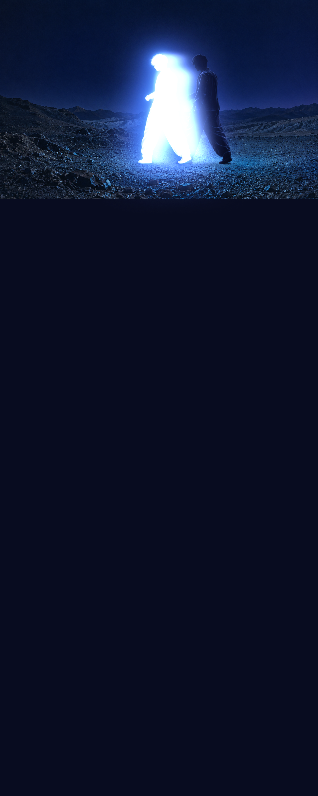

ФИЗИКА ДУШИ
THE MORE
YOU MOVE
Ты уже сделал шаг
Свет всё ещё помнит тебя
ЧТО ОСТАЁТСЯ, КОГДА ТЫ УХОДИШЬ?
THE MORE
YOU LEAVE
ТЕЛО ЗДЕСЬ ДУША ДАЛЬШЕЛистай ниже ↓
О невидимом
У ДУШИ НЕТ ФОРМЫ
НО ЕСТЬ ПРИСУТСТВИЕ
Мы узнаём друг друга по тому, что нельзя увидеть
По теплу, которое остаётся после встречи
По смелости быть собой, даже когда никто не смотрит
То, что внутри
ВНУТРИ
БОЛЬШЕ
Мы меняемся Чувствуем Отпускаем
И всё же остаёмся собой
Быть рядом больше, чем касаться
Слышать себя значит доверять
Помнить значит сохранять тепло
Прикоснись к форме и поверни ↗Возвращение к себе
ТИШЕ МИР
ЯСНЕЕ ТВОЙ ГОЛОС
- 01
Замедлись
Оставь снаружи чужие ожидания
- 02
Почувствуй
Заметь, что отзывается именно тебе
- 03
Останься собой
Тебе не нужно становиться кем-то другим
В своём ритме
У КАЖДОГО
СВОЙ РИТМ
МедленнееСвободнее
Необязательно спешить
Можно просто побыть здесь
Невидимое остаётся
У КАЖДОГО
ЕСТЬ СВОЙ СЛЕД
В чьей-то памяти
В тихом слове поддержки
В моменте, когда ты был рядом
Твоё присутствие уже меняет мир
Свет проявляется
Не ищи другой свет
Заметь свой
Потяни, чтобы повернуть систему целиком